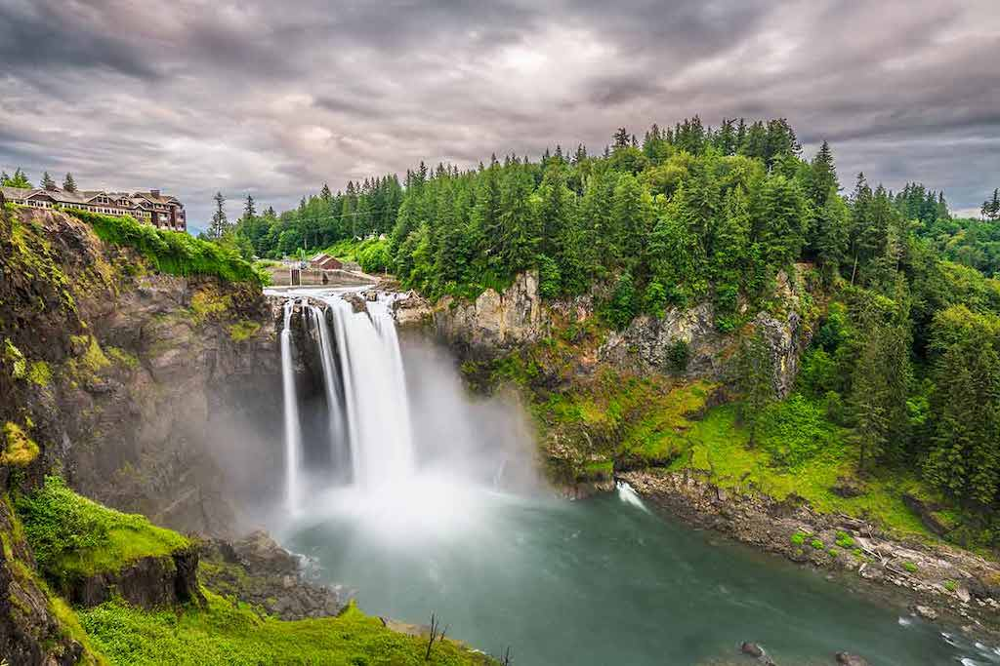

The Tourism and Travel Web GIS project is a comprehensive platform designed to assist travelers
and staycation seekers in Washington State. With a focus on interactive maps, transportation information,
and user reviews, this project aims to provide a unique and personalized travel experience. Inspired by the
need to uncover local areas and hidden gems, the platform aims to move beyond mainstream tourism and offer a
deeper exploration of Washington State.
Here is the tourism cover image in its orginal size:
